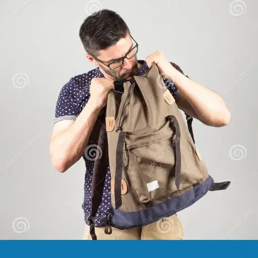

Restricted Backpack
- Downloads
- 118
- Favourites
- 3
This mod will force you to set your backpack down to access it in-raid.
Realistically you can not access a backpack on your shoulders without taking it off first. With this mod, you will have to set down your backpack (default key-bind is double-press Z) and search it while it is on the ground.
This mod does not hide your backpack while you are looting a container or body under the assumption that your PMC is taking the time to set down their bag when looting. Also it would be way too inconvenient otherwise.
Picking up loose loot will still go directly into your backpack depending on the item type.
Affect on Gameplay: This mod has an interesting affect on gameplay. Now, rig and pocket slots are much more valuable as having quick access to medical items becomes a priority.
Assuming you’ll still carry food and drink in your backpack, snack breaks are no longer near instant menu operations. You must deliberately find a safe place to pause, take off your back, eat and drink. Same goes for post-combat healing sessions. This is especially true when playing as a team. The extra time it takes for everyone to snack and heal will make you rethink when and where to do them.
Looting gameplay remains largely unaffected, though there are time you might want to set down and reorganize your backpack after a long raid of looting.
Video: https://youtu.be/q2qoPXmzjCg
Version
1.0.0
Initial release